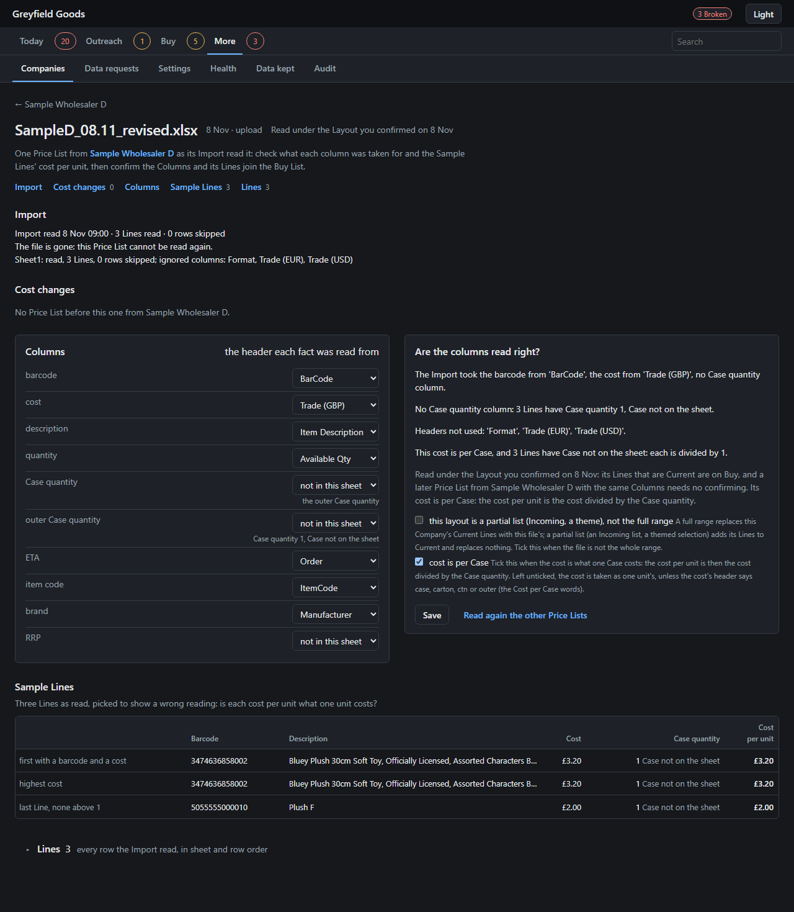
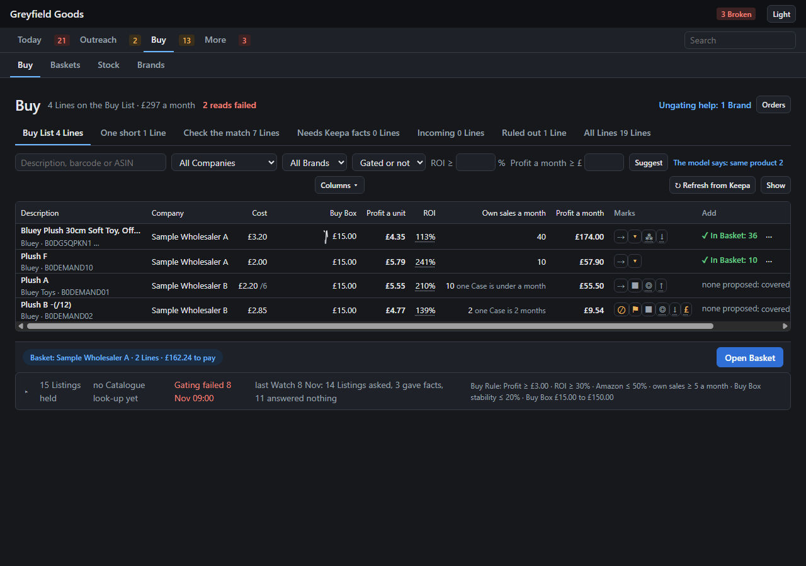
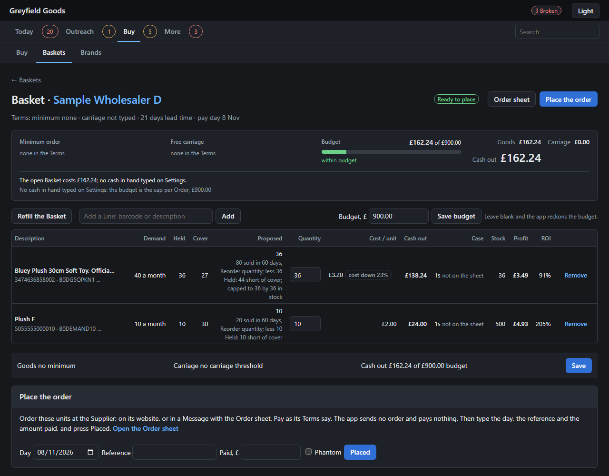

Reach
أداة لتوريد البضائع بالجملة وشرائها لبيعها عبر Amazon FBA. مشروع شخصي لحسين درويش، من تشرين الأول/أكتوبر 2026 حتى الآن.
ما الذي تفعله
تتولّى Reach جانب الشراء في نشاط تجاري صغير لإعادة البيع عبر Amazon FBA، خطوةً بخطوة: فهي تعثر على تجّار الجملة في المملكة المتحدة الجديرين بالتواصل معهم، وتساعد على فتح حسابات تجارية لديهم، وتقرأ قوائم أسعارهم، وتطابق كل بند مع صفحته على Amazon، وتحكم على ما إذا كان البند يستحق الشراء، ثم تتابع الطلبية حتى تصبح مخزونًا لدى Amazon، وصولًا إلى ما بِيع منها.
خطّطتُ لها ووضعتُ مواصفاتها، ثم بنيتُها بتوجيه وكلاء برمجة بالذكاء الاصطناعي. كل رسالة بريد إلكتروني إلى مورّد، وكل طلبية، وكل تغيير على Amazon ينتظر موافقتي: فهي لا تتصرّف من تلقاء نفسها أبدًا.
النتائج حتى الآن
- العثور على تجّار الجملة في المملكة المتحدة الذين يقفون وراء 7,800 علامة تجارية تُباع على Amazon، والتواصل مع 43 منهم، وبدء محادثات مع العشرين الذين ردّوا.
- مطابقة 44 قائمة أسعار من الموردين (34,000 بند) مع صفحات المنتجات على Amazon عبر الباركود، ووضع قاعدة الشراء التي تحكم على كل بند وفق الرسوم والمنافسة وهامش الربح.
- إيصال أول منتج من قائمة أسعار المورّد إلى عرض FBA نشط في تشرين الثاني/نوفمبر 2026، مع فحص يومي للسعر والمخزون.
كيف بنيتُها
- التخطيط أولًا. كتبتُ بلغة بسيطة واضحة ما ينبغي أن تفعله كل خطوة من خطوات النشاط التجاري والمصطلحات التي تستخدمها، ورتّبتُ حسب الأولوية ما يعنيه «الجيّد» بالنسبة إلى الأداة (أولًا الأمان: لا يُنفَق شيء ولا يُرسَل شيء دون إذني؛ ثم صحة الأرقام؛ وتأتي السرعة قرب آخر القائمة).
- مهامّ صغيرة مكتوبة. بدأ كل تغيير بمهمة قصيرة مكتوبة تحدّد هدفها وكيف سنعرف أنها نجحت. بنى وكلاء البرمجة بالذكاء الاصطناعي كل مهمة مع اختبارات آلية، وتحقّقت مراجعة مستقلة من العمل مقارنةً بالمهمة.
- التجربة قبل التشغيل الفعلي. يُفحَص كل تغيير أولًا على نسخة تجريبية ببيانات نموذجية، وبعد ذلك فقط يُطلَق على النسخة الفعلية التي تدير النشاط التجاري.
- القياس. تنظر مراجعة أسبوعية فيما فعلته الأداة وما تعطّل منها، ومنها تنبثق المهام التالية.
لقطات الشاشة
تستخدم هذه اللقطات بيانات نموذجية مختلَقة: كل اسم شركة وسعر ورقم أدناه مختلَق لأغراض الاختبار، ولا يظهر فيها أي مورّد أو سعر أو عملية بيع حقيقية. وهي تتبع سلسلة الشراء بالترتيب، من العثور على تجّار الجملة إلى ما بِيع. واجهة التطبيق باللغة الإنجليزية، لذا تَرِد أسماء التبويبات والصفحات بالإنجليزية بين قوسين.





